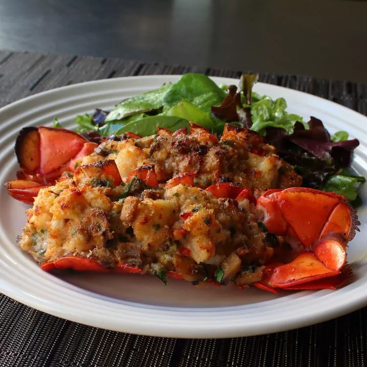

Lobster Thermidor

Description
It's not hard to make an excellent lobster dish if you have a good recipe, and Chef John's lobster thermidor is an outstanding recipe. It's a rich dish, but paired with a green salad, it makes for a delicious summer meal.
Ingredients
- 2 (1 1/2 pound) cooked lobsters, split, bodies and claws removed and meat coarsely chopped
- 1/4 cup butter
- 1 shallot, minced
- 1 pinch kosher salt
- 1 pinch cayenne pepper
- 1/4 cup all-purpose flour
- 1 cup milk
- 1/4 cup heavy whipping cream
- 1 tablespoon Dijon mustard
- 1 tablespoon dry sherry
- 1/2 cup grated Gruyere cheese
- 1/4 cup grated Parmigiano-Reggiano cheese
- 1 tablespoon chopped fresh flat-leaf parsley
- 1 pinch paprika
Steps
- Preheat the oven to 400 degrees F (200 degrees C). Line a baking sheet with aluminum foil.
- Melt butter in a large skillet over medium heat. Add shallot, salt, and cayenne pepper. Cook and stir until shallot is translucent, about 5 minutes. Add flour and cook, stirring constantly, until mixture is golden brown, about 5 minutes. Slowly whisk in milk and cream. Cook, whisking constantly, until mixture is thickened, about 5 minutes. Stir in mustard and sherry. Remove from heat and stir in Gruyere and Parmigiano-Reggiano cheeses until melted. Fold in lobster meat.
- Place lobster shells on the prepared baking sheet. Spoon lobster mixture into the shells. Sprinkle with parsley and paprika.
- Bake in the preheated oven until golden brown, about 10 minutes.